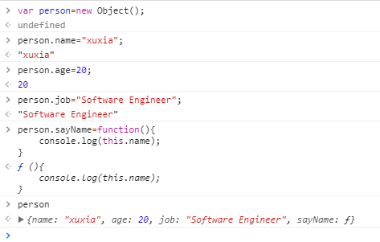
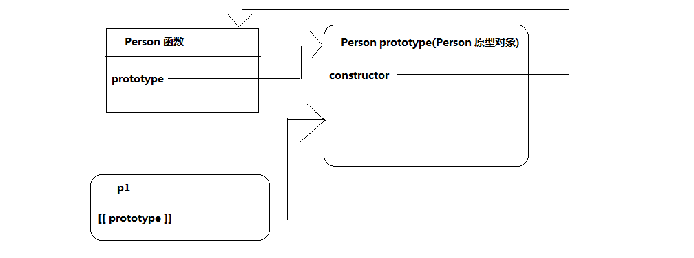

对象
- 定义：无序属性的集合，其属性可以包含基本值、对象、函数。
- 理解：

- 属性的类型：数据属性、访问器属性
- 数据属性
数据属性包含一个数据值的位置。在这个位置可以读取和写入值。
数据属性有四个描述其行为的特性。
configurable：表示能否通过delete删除属性从而重新定义属性，能否修改属性的特性，
或能否把属性修改为访问器属性，默认为true

enumerable：表示能否通过for-in循环返回属性，默认为true

writable：表示能否修改属性的值，默认为true
value：包含该属性的数据值。读取属性值时，从这个位置读；写入属性值时把新值保存
在这个位置上，默认为undefined

-------------------------------------------------------------------------------------

要修改属性默认的特性，必须使用Object.defineProperty()方法
Object.defineProperty(属性所在的对象,属性的名字,描述符对象)

一旦属性定义为不可配置，就不能再变回可配置了

- 访问器属性
访问器属性不包含数据值，包含的是一对get和set函数，在读写访问器属性时，就是通过这两个方法来进行操作处理的。
访问器属性包含的四个特性：
configurable：表示能否通过delete删除属性从而重新定义属性，能否修改属性的特性，
或能否把属性修改为访问器属性，默认为false
enumerable：表示能否通过for-in循环返回属性，默认为false
get：在读取属性时调用的函数，默认为undefined
set：在写入属性时调用的函数，默认为undefined
访问器属性不能直接定义，要通过Object.defineProperty()方法来定义


- 定义多个属性
利用Object.defineProperties()方法，通过描述符一次定义多个属性，接收两个对象参数：
要添加或修改其属性的对象、对象的属性与第一个对象中要添加或修改的属性一一对应。

- 读取属性的特性
Object.getOwnPropertyDescriptor(属性所在对象,要读取的属性的名称);

在JavaScript中，可以针对任何对象(包括DOM，BOM)，使用Object.getOwnPropertyDescriptor()
- 创建对象——工厂模式
考虑到在 ECMAScript 中无法创建类，开发人员就发明了一种函数，用函数来封装以特定接口创建对象的细节，如下面的例子所示：

优点：解决了创建多个相似对象的问题（解决了重复实例化的问题）
缺点：没有解决对象识别的问题（即怎样知道一个对象的类型）

- 创建对象——构造函数模式
创建自定义的构造函数，从而定义自定义对象的属性和方法。
惯例：构造函数始终应该以大写字母开头。

没有显示的创建对象（new Object）,直接将属性和方法赋给this对象，没有return语句
优点：解决了重复实例化的问题，又解决了对象识别问题


要创建 Person 的新实例，必须使用 new 操作符。以这种方式调用构造函数实际上会经历以下 4个步骤：
(1) 创建一个新对象；
(2) 将构造函数的作用域赋给新对象（因此 this 就指向了这个新对象）；
(3) 执行构造函数中的代码（为这个新对象添加属性）
(4) 返回新对象。
person1 和 person2 分别保存着 Person 的一个不同的实例。这两个对象都有一个 constructor（构造函数）属性，该属性指向 Person，

检测对象类型，instanceof，这个例子中创建的所有对象既是Person 的实例，同时也是Object的实例，因为所有对象均继承自Object

创建自定义的构造函数意味着将来可以将它的实例标识为一种特定的类型；而这正是构造函数模式胜过工厂模式的地方。
Person()函数可以通过下列任何一种方式来调用。
// 当作构造函数使用
var person = new Person("Nicholas", 29, "Software Engineer");
person.sayName(); //"Nicholas"
// 作为普通函数调用
Person("Greg", 27, "Doctor"); // 添加到 window，在全局作用域中调用一个函数时，this指向Global对象
window.sayName(); //"Greg"
// 在另一个对象的作用域中调用
var o = new Object();
Person.call(o, "Kristen", 25, "Nurse");
o.sayName(); //"Kristen"
- 创建对象——原型模式
我们创建的每个函数都有一个 prototype（原型）属性，这个属性是一个指针，指向一个对象，而这个对象的用途是包含可以由特定类型的所有实例共享的属性和方法。
如果按字面意思来理解，那么prototype就是通过调用构造函数而创建的那个对象实例的原型对象。使用原型对象的好处是可以让所有对象实例共享它所包含的属性和方法。换句话说，不必在构造函数中定义对象实例的信息，而是可以将这些信息直接添加到原型对象中。例如：

通过调用构造函数来创建新对象，而且新对象还会具有相同的属性和方法。但与构造函数模式不同的是，新对象的这些属性和方法是由所有实例共享的。
- 理解原型对象
无论什么时候，只要创建了一个新函数A，浏览器就会在内存中创建一个对象B，函数A有一个prototype属性，该属性指向函数A的原型对象B。对象B是函数A的原型对象。

对象B的属性constructor指向prototype属性所在函数的指针，即A

当调用构造函数A创建一个新实例后，该实例的内部将包含一个指针，指向构造函数A的原型对象B

注意：此连接存在于实例与构造函数的原型对象之间，而不是实例与构造函数之间

- 从上面的图示中可以看到，创建p1对象虽然使用的是Person构造函数，但是对象创建出来之后，这个p1对象其实已经与Person构造函数没有任何关系了，p1对象的[[ prototype ]]属性指向的是Person构造函数的原型对象。
- 如果使用new Person()创建多个对象，则多个对象都会同时指向Person构造函数的原型对象。
- 我们可以手动给这个原型对象添加属性和方法，那么p1,p2,p3…这些对象就会共享这些在原型中添加的属性和方法。
- 如果我们访问p1中的一个属性name，如果在p1对象中找到，则直接返回。如果p1对象中没有找到，则直接去p1对象的[[prototype]]属性指向的原型对象中查找，如果查找到则返回。(如果原型中也没有找到，则继续向上找原型的原型—原型链。 后面再讲)。
- 如果通过p1对象添加了一个属性name，则p1对象来说就屏蔽了原型中的属性name。 换句话说：在p1中就没有办法访问到原型的属性name了。那么如何恢复这个连接呢？使用delete删除p1中的属性name即可：

- 通过p1对象只能读取原型中的属性name的值，而不能修改原型中的属性name的值。 p1.name = “李四”; 并不是修改了原型中的值，而是在p1对象中给添加了一个属性name。

如何确定实例对象与原型对象之间是否存在关系？

使用ES5增加的新方法：

如何检测一个属性是存在于实例中，还是存在于原型中？


如何获得原型属性的描述符呢？


- 原型与in操作符

for-in，返回所有能够通过对象访问的，可枚举的属性
还可使用Object.keys()方法

- 更简单的原型语法
用一个包含所有属性和方法的对象字面量来重写整个原型对象。


- 原型的动态性
对原型对象所做的任何修改都能立即从实例对象中反应出来。但如果是重写整个原型对象，前面这句话就不成立了
图解如下：

重写原型对象切断了现有原型与与任何之前已经存在的对象实例之间的联系，他们引用的仍然是最初的原型。
- 原生对象的原型
原生的引用类型（Object、Array、String，等等）都是采用原型模式创建的，都在其构造函数的原型上定义了方法。
- 原型对象的问题
最大问题是由其共享的本质性造成的。省略了为构造函数传初始化参数，结果所有实例都具有相同的属性值。
- 创建对象——组合使用构造函数模式和原型模式
创建自定义类型的最常见方式，就是组合使用构造函数模式和原型模式。构造函数模式用于定义实例属性，而原型模式用于定义方法和共享的属性。
优点：每个实例都会有自己的一份实例属性的副本，但同时又共享这对方法的引用，最大限度的节省了内存。
这种构造函数与原型组合的模式,是ECMAScript中使用最广泛、认同度最高的一种创建自定义类型的方法。可以说，这是用来定义引用类型的一种默认模式。

- 创建对象——动态原型模式
采用这种模式创建的对象，不能使用对象字面量重写原型

- 寄生构造函数模式
建议不用
- 稳妥构造函数模式